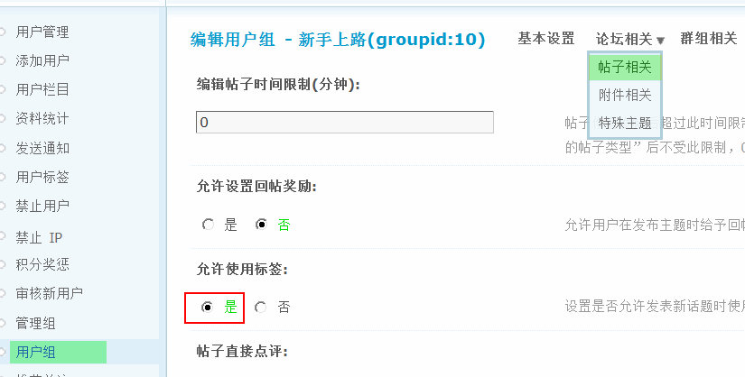
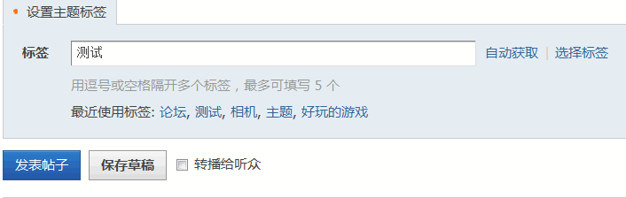
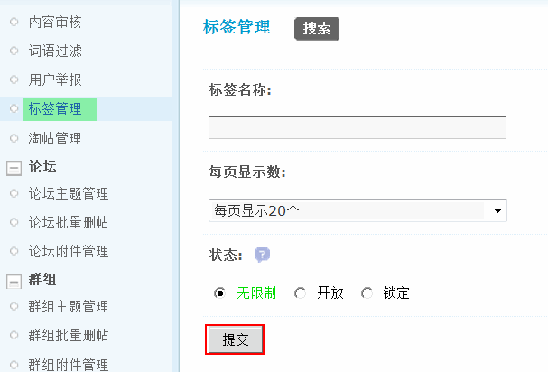
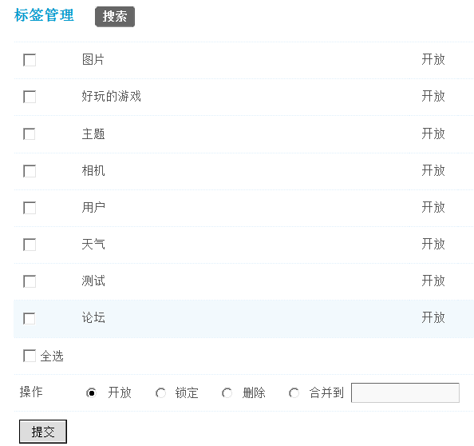

标签管理
标签作为论坛主题横向关联的工具，极大地减轻了管理员的分类工作，同时也可以通过标签快速的搜索到相关内容，如果想让会员使用标签功能，需要在用户组中开启，开启后用户发帖就可以使用标签功能了，管理员可以通过标签管理功能来实现对标签的统一管理，包括删除标签、锁定标签、删除标签和对不同的标签进行合并。
一、开启会员的标签使用功能
如果想让会员和管理人员一样使用标签功能，必须在后台开启，操作路径：【后台】=>【用户】=>【用户组】=>编辑某一用户组，=>【论坛相关】=>【帖子相关】=>【允许使用标签】选择“是”即可。
那么该会员在前台发帖时就可以使用标签功能了，如下图所示：
默认是手动输入标签，如果需要自动生成也可以选择“自动获取”。点击“选择标签”可以选择最近使用的标签。
当会员使用和创建的标签越来越多后，管理人员可以在后台对这些标签进行统一管理。
二、管理标签
可以按照标签名称，每页显示主题数量，状态三个条件进行搜索。写好搜索条件后，点击“提交”，就可以搜索出来符合条件的标签了。
搜索结果中，可以看到标签名称即状态，并且可以对标签做更改状态或者删除的操作，同时也对标签进行合并。
开放：该标签可以正常使用。
锁定：标签被锁定后将不能使用，使用时将会有如下提示：
删除：标签将被彻底删除，带有该标签的帖子将不显示该标签。
合并：可以将一个或多个不同的标签合并为一个新的标签。